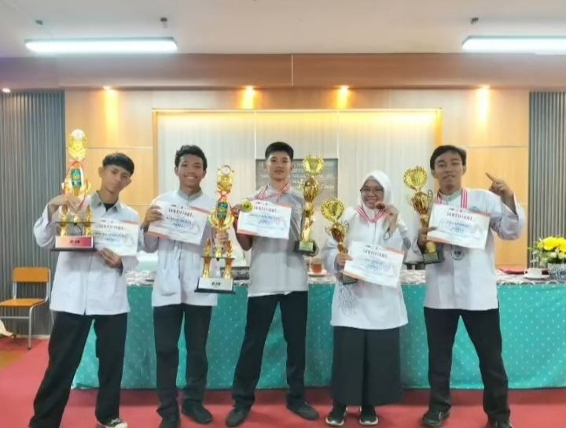

Website AfiqahBerbagi Cerita dan Informasi |
|
| Beranda | Tentang Saya | Sekolahku | Syair Lagu | |
Prestasi O2SN Kota Tangerang 2026Senin, 28 September 2026  SMKN 1 Tangerang Borong Prestasi di O2SN Kota Tangerang 2026! Alhamdulillah, kabar membanggakan kembali datang dari siswa-siswi SMKN 1 Tangerang yang berhasil mengharumkan nama sekolah pada ajang Olimpiade Olahraga Siswa Nasional (O2SN) Kota Tangerang Tahun 2026. Dengan semangat juang, kerja keras, dan sportivitas yang tinggi, para peserta berhasil meraih prestasi sebagai berikut:
Juara 1 (Medali Emas)
Juara 2 (Medali Perak)
Juara 3 (Medali Perunggu) Prestasi ini merupakan buah dari kerja keras para siswa, dedikasi para pelatih dan guru pembimbing, serta dukungan penuh dari seluruh keluarga besar SMKN 1 Tangerang. Selamat kepada seluruh peraih prestasi! Semoga capaian ini menjadi motivasi untuk terus berlatih, berprestasi, dan menginspirasi siswa lainnya. Bagi para juara yang akan melanjutkan ke tingkat berikutnya, semoga diberikan kemudahan dan mampu mengharumkan nama Kota Tangerang serta Provinsi Banten. SMKN 1 Tangerang, terus melahirkan generasi yang kompeten, berkarakter, dan berprestasi! |
Menu LainnyaBerita Lainnya |
| © Copyright Afiqah Anata Putri Latiefah, 2026. | |